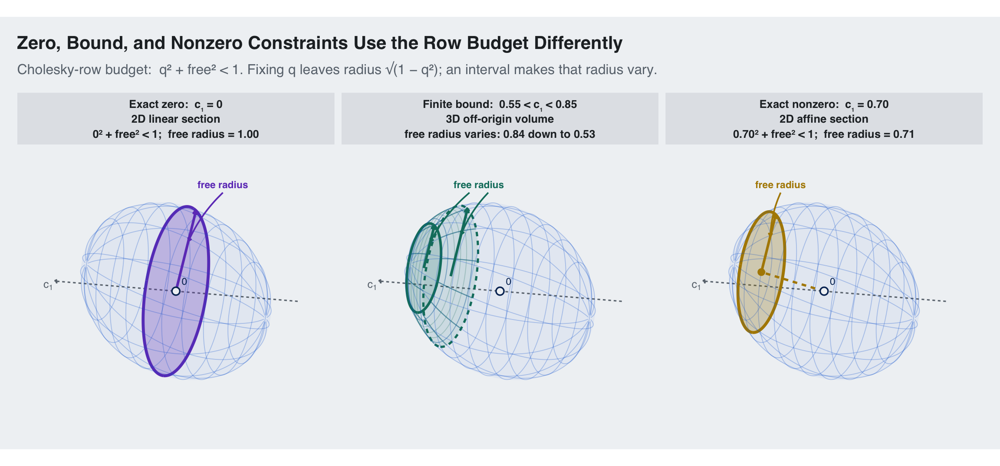

Code
library(ggplot2)
source("../../R/theme_blog.R")
schur_constraint_plot <- local({
previous_block <- matrix(
c(
1.0, 0.5, 0.5,
0.5, 1.0, 0.5,
0.5, 0.5, 1.0
),
nrow = 3,
byrow = TRUE
)
previous_cholesky <- chol(previous_block)
lower_bound <- 0.55
upper_bound <- 0.85
fixed_nonzero <- 0.70
lower_free_radius <- sqrt(1 - lower_bound^2)
upper_free_radius <- sqrt(1 - upper_bound^2)
fixed_free_radius <- sqrt(1 - fixed_nonzero^2)
zero_panel <- paste(
"Exact zero: c₁ = 0",
"2D linear section",
"0² + free² < 1; free radius = 1.00",
sep = "\n"
)
bound_panel <- paste(
"Finite bound: 0.55 < c₁ < 0.85",
"3D off-origin volume",
sprintf(
"free radius varies: %.2f down to %.2f",
lower_free_radius,
upper_free_radius
),
sep = "\n"
)
nonzero_panel <- paste(
"Exact nonzero: c₁ = 0.70",
"2D affine section",
sprintf(
"0.70² + free² < 1; free radius = %.2f",
fixed_free_radius
),
sep = "\n"
)
panel_levels <- c(zero_panel, bound_panel, nonzero_panel)
stopifnot(
min(eigen(
previous_block,
symmetric = TRUE,
only.values = TRUE
)$values) > 0,
-1 < lower_bound,
lower_bound < upper_bound,
upper_bound < 1,
0 < fixed_nonzero,
fixed_nonzero < 1
)
azimuth <- 72 * pi / 180
elevation <- 30 * pi / 180
roll <- -14 * pi / 180
right <- c(-sin(azimuth), cos(azimuth), 0)
up <- c(
-sin(elevation) * cos(azimuth),
-sin(elevation) * sin(azimuth),
cos(elevation)
)
project_3d <- function(points) {
projected <- as.matrix(points) %*% cbind(right, up)
data.frame(
x = cos(roll) * projected[, 1] -
sin(roll) * projected[, 2],
y = sin(roll) * projected[, 1] +
cos(roll) * projected[, 2]
)
}
ellipsoid_section <- function(value, n = 481) {
angle <- seq(0, 2 * pi, length.out = n)
radius <- sqrt(1 - value^2)
sphere_section <- cbind(
value,
radius * cos(angle),
radius * sin(angle)
)
sphere_section %*% previous_cholesky
}
section_check <- ellipsoid_section(fixed_nonzero)
previous_precision <- solve(previous_block)
stopifnot(
max(abs(section_check[, 1] - fixed_nonzero)) < 1e-12,
max(abs(
rowSums(
(section_check %*% previous_precision) * section_check
) - 1
)) < 1e-10
)
ellipsoid_rail <- function(angle, from, to, n = 241) {
first <- seq(from, to, length.out = n)
radius <- sqrt(1 - first^2)
sphere_rail <- cbind(
first,
radius * cos(angle),
radius * sin(angle)
)
sphere_rail %*% previous_cholesky
}
with_panel <- function(data, panel, group = NULL) {
data$panel <- factor(panel, levels = panel_levels)
if (!is.null(group)) {
data$group <- paste(panel, group, sep = "::")
}
data
}
# Common ellipsoid silhouette.
surface_grid <- expand.grid(
first = seq(-0.999, 0.999, length.out = 61),
angle = seq(0, 2 * pi, length.out = 121)
)
surface_radius <- sqrt(1 - surface_grid$first^2)
surface_sphere <- cbind(
surface_grid$first,
surface_radius * cos(surface_grid$angle),
surface_radius * sin(surface_grid$angle)
)
surface_projection <- project_3d(
surface_sphere %*% previous_cholesky
)
silhouette_one <- surface_projection[
chull(surface_projection$x, surface_projection$y),
]
silhouette <- do.call(rbind, lapply(panel_levels, function(panel) {
with_panel(silhouette_one, panel, "ellipsoid")
}))
# Sparse common wireframe.
wire_parts <- list()
wire_id <- 1
for (value in seq(-0.8, 0.8, by = 0.2)) {
wire_parts[[wire_id]] <- cbind(
project_3d(ellipsoid_section(value)),
wire_group = paste0("ring", wire_id)
)
wire_id <- wire_id + 1
}
for (angle in seq(0, 330, by = 30) * pi / 180) {
wire_parts[[wire_id]] <- cbind(
project_3d(ellipsoid_rail(angle, -0.999, 0.999)),
wire_group = paste0("rail", wire_id)
)
wire_id <- wire_id + 1
}
wire_one <- do.call(rbind, wire_parts)
ellipsoid_wire <- do.call(rbind, lapply(panel_levels, function(panel) {
with_panel(wire_one, panel, wire_one$wire_group)
}))
zero_slice <- with_panel(
project_3d(ellipsoid_section(0)),
zero_panel,
"zero"
)
nonzero_slice <- with_panel(
project_3d(ellipsoid_section(fixed_nonzero)),
nonzero_panel,
"nonzero"
)
# The interval intersection: a projected silhouette, internal sections,
# curved boundary rails, and the two planar endpoint faces.
volume_grid <- expand.grid(
first = seq(lower_bound, upper_bound, length.out = 81),
angle = seq(0, 2 * pi, length.out = 181)
)
volume_radius <- sqrt(1 - volume_grid$first^2)
volume_sphere <- cbind(
volume_grid$first,
volume_radius * cos(volume_grid$angle),
volume_radius * sin(volume_grid$angle)
)
volume_projection <- project_3d(
volume_sphere %*% previous_cholesky
)
volume_silhouette <- with_panel(
volume_projection[
chull(volume_projection$x, volume_projection$y),
],
bound_panel,
"volume"
)
internal_values <- seq(
lower_bound,
upper_bound,
length.out = 7
)[2:6]
bound_sections <- do.call(rbind, lapply(
seq_along(internal_values),
function(index) {
with_panel(
project_3d(ellipsoid_section(internal_values[index])),
bound_panel,
paste0("section", index)
)
}
))
bound_rails <- do.call(rbind, lapply(
seq_along(seq(0, 330, by = 30)),
function(index) {
angle <- seq(0, 330, by = 30)[index] * pi / 180
with_panel(
project_3d(ellipsoid_rail(
angle,
lower_bound,
upper_bound
)),
bound_panel,
paste0("bound_rail", index)
)
}
))
bound_faces <- rbind(
with_panel(
project_3d(ellipsoid_section(lower_bound)),
bound_panel,
"lower_face"
),
with_panel(
project_3d(ellipsoid_section(upper_bound)),
bound_panel,
"upper_face"
)
)
# A common c1 axis and origin make central versus affine obvious.
c1_axis_3d <- rbind(c(-1.08, 0, 0), c(1.08, 0, 0))
c1_axis_projected <- project_3d(c1_axis_3d)
c1_axis <- do.call(rbind, lapply(panel_levels, function(panel) {
data.frame(
x = c1_axis_projected$x[1],
y = c1_axis_projected$y[1],
xend = c1_axis_projected$x[2],
yend = c1_axis_projected$y[2],
panel = factor(panel, levels = panel_levels)
)
}))
c1_label <- do.call(rbind, lapply(panel_levels, function(panel) {
data.frame(
x = c1_axis_projected$x[2],
y = c1_axis_projected$y[2],
label = "c[1]",
panel = factor(panel, levels = panel_levels)
)
}))
origin_projection <- project_3d(matrix(c(0, 0, 0), nrow = 1))
origins <- data.frame(
x = origin_projection$x,
y = origin_projection$y,
panel = factor(panel_levels, levels = panel_levels)
)
origin_labels <- transform(
origins,
x = x + 0.05,
y = y + 0.055,
label = "0"
)
nonzero_center_3d <- c(
fixed_nonzero,
0.5 * fixed_nonzero,
0.5 * fixed_nonzero
)
nonzero_center <- project_3d(matrix(nonzero_center_3d, nrow = 1))
offset_segment <- data.frame(
x = origin_projection$x,
y = origin_projection$y,
xend = nonzero_center$x,
yend = nonzero_center$y,
panel = factor(nonzero_panel, levels = panel_levels)
)
# In Cholesky coordinates, fixing the first coordinate to q leaves
# v_2^2 + v_3^2 < 1 - q^2. Draw one transformed radius in each
# section so the spent and remaining parts of that budget are visible.
free_radius_segment <- function(value, panel) {
radius <- sqrt(1 - value^2)
points <- rbind(
c(value, 0, 0),
c(value, 0, radius)
) %*% previous_cholesky
projected <- project_3d(points)
data.frame(
x = projected$x[1],
y = projected$y[1],
xend = projected$x[2],
yend = projected$y[2],
panel = factor(panel, levels = panel_levels)
)
}
zero_radius_segment <- free_radius_segment(0, zero_panel)
bound_radius_segments <- rbind(
transform(
free_radius_segment(lower_bound, bound_panel),
face = "lower"
),
transform(
free_radius_segment(upper_bound, bound_panel),
face = "upper"
)
)
nonzero_radius_segment <- free_radius_segment(
fixed_nonzero,
nonzero_panel
)
radius_target <- function(segment, fraction = 0.62) {
c(
x = segment$x + fraction * (segment$xend - segment$x),
y = segment$y + fraction * (segment$yend - segment$y)
)
}
callout_targets <- rbind(
radius_target(zero_radius_segment),
radius_target(subset(bound_radius_segments, face == "lower")),
radius_target(subset(bound_radius_segments, face == "upper")),
radius_target(nonzero_radius_segment)
)
free_radius_arrows <- data.frame(
arrow_x = c(0.40, -0.10, -0.26, -0.37),
arrow_y = rep(0.84, 4),
xend = callout_targets[, "x"],
yend = callout_targets[, "y"],
constraint = factor(
c("zero", "bound", "bound", "nonzero"),
levels = c("zero", "bound", "nonzero")
),
panel = factor(
c(zero_panel, bound_panel, bound_panel, nonzero_panel),
levels = panel_levels
)
)
free_radius_labels <- data.frame(
label_x = c(0.40, -0.18, -0.37),
label_y = rep(0.91, 3),
constraint = factor(
c("zero", "bound", "nonzero"),
levels = c("zero", "bound", "nonzero")
),
panel = factor(panel_levels, levels = panel_levels),
label = "free radius"
)
ggplot() +
geom_polygon(
data = silhouette,
aes(x, y, group = group),
fill = blog_colors$blue,
color = NA,
alpha = 0.055
) +
geom_path(
data = ellipsoid_wire,
aes(x, y, group = group),
color = blog_colors$blue,
alpha = 0.07,
linewidth = 0.35
) +
geom_segment(
data = c1_axis,
aes(x = x, y = y, xend = xend, yend = yend),
color = blog_colors$text_light,
linetype = "22",
linewidth = 0.55,
arrow = grid::arrow(
length = grid::unit(0.10, "cm"),
type = "closed"
)
) +
geom_polygon(
data = volume_silhouette,
aes(x, y, group = group),
fill = blog_colors$teal,
color = NA,
alpha = 0.045
) +
geom_path(
data = bound_sections,
aes(x, y, group = group),
color = blog_colors$teal,
alpha = 0.24,
linewidth = 0.35
) +
geom_path(
data = bound_rails,
aes(x, y, group = group),
color = blog_colors$teal,
alpha = 0.48,
linewidth = 0.45
) +
geom_polygon(
data = subset(bound_faces, grepl("lower_face", group)),
aes(x, y, group = group),
fill = blog_colors$teal,
color = blog_colors$teal,
alpha = 0.06,
linetype = "22",
linewidth = 0.9
) +
geom_polygon(
data = subset(bound_faces, grepl("upper_face", group)),
aes(x, y, group = group),
fill = blog_colors$teal,
color = blog_colors$teal,
alpha = 0.16,
linewidth = 1.05
) +
geom_polygon(
data = zero_slice,
aes(x, y, group = group),
fill = blog_colors$purple,
color = blog_colors$purple,
alpha = 0.27,
linewidth = 1.2
) +
geom_polygon(
data = nonzero_slice,
aes(x, y, group = group),
fill = blog_colors$gold,
color = blog_colors$gold,
alpha = 0.27,
linewidth = 1.2
) +
geom_path(
data = ellipsoid_wire,
aes(x, y, group = group),
color = blog_colors$blue,
alpha = 0.23,
linewidth = 0.30
) +
geom_segment(
data = zero_radius_segment,
aes(x = x, y = y, xend = xend, yend = yend),
color = blog_colors$purple,
linewidth = 1.05,
arrow = grid::arrow(
length = grid::unit(0.10, "cm"),
type = "closed"
)
) +
geom_segment(
data = bound_radius_segments,
aes(x = x, y = y, xend = xend, yend = yend),
color = blog_colors$teal,
linewidth = 1.05,
arrow = grid::arrow(
length = grid::unit(0.10, "cm"),
type = "closed"
)
) +
geom_segment(
data = offset_segment,
aes(x = x, y = y, xend = xend, yend = yend),
color = blog_colors$gold,
linetype = "22",
linewidth = 0.95,
arrow = grid::arrow(
length = grid::unit(0.10, "cm"),
type = "closed"
)
) +
geom_segment(
data = nonzero_radius_segment,
aes(x = x, y = y, xend = xend, yend = yend),
color = blog_colors$gold,
linewidth = 1.05,
arrow = grid::arrow(
length = grid::unit(0.10, "cm"),
type = "closed"
)
) +
geom_point(
data = origins,
aes(x, y),
shape = 21,
fill = blog_colors$background,
color = blog_colors$navy,
size = 2.6,
stroke = 0.9
) +
geom_text(
data = origin_labels,
aes(x, y, label = label),
color = blog_colors$navy,
size = 3.0,
hjust = 0,
vjust = 0
) +
geom_point(
data = transform(
nonzero_center,
panel = factor(nonzero_panel, levels = panel_levels)
),
aes(x, y),
color = blog_colors$gold,
size = 2.4
) +
geom_curve(
data = free_radius_arrows,
aes(
x = arrow_x,
y = arrow_y,
xend = xend,
yend = yend,
color = constraint
),
curvature = 0.10,
linewidth = 0.65,
arrow = grid::arrow(
length = grid::unit(0.10, "cm"),
type = "closed"
)
) +
geom_text(
data = free_radius_labels,
aes(
x = label_x,
y = label_y,
label = label,
color = constraint
),
fontface = "bold",
size = 3.0
) +
geom_text(
data = c1_label,
aes(x, y, label = label),
parse = TRUE,
color = blog_colors$text_light,
hjust = 1.1,
vjust = 1.1,
size = 3.3
) +
scale_color_manual(
values = c(
zero = blog_colors$purple,
bound = blog_colors$teal,
nonzero = blog_colors$gold
),
guide = "none"
) +
facet_wrap(~panel, nrow = 1) +
coord_equal(
xlim = c(-1.35, 1.35),
ylim = c(-1.20, 1.25),
expand = FALSE
) +
theme_blog() +
theme(
panel.grid = element_blank(),
panel.grid.major = element_blank(),
panel.grid.minor = element_blank(),
axis.title = element_blank(),
axis.text = element_blank(),
axis.ticks = element_blank(),
axis.line = element_blank(),
legend.position = "none",
strip.text = element_text(size = 9.6, lineheight = 1.12)
) +
labs(
title = "Zero, Bound, and Nonzero Constraints Use the Row Budget Differently",
subtitle = paste(
"Cholesky-row budget: q² + free² < 1.",
"Fixing q leaves radius √(1 − q²); an interval makes that radius vary."
)
)
})
schur_constraint_plot